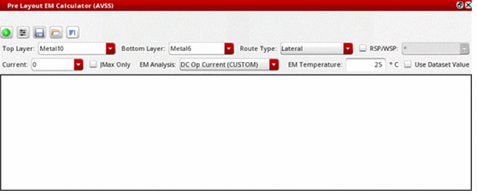
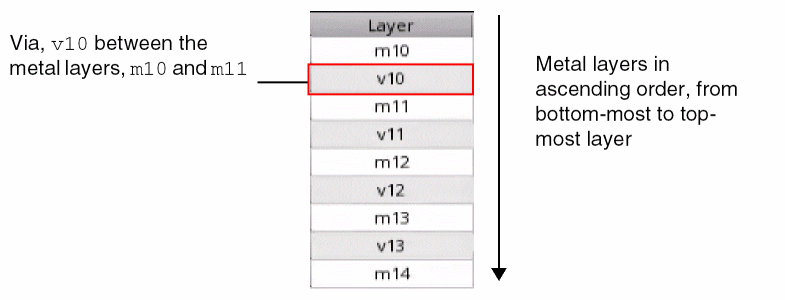
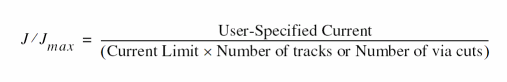
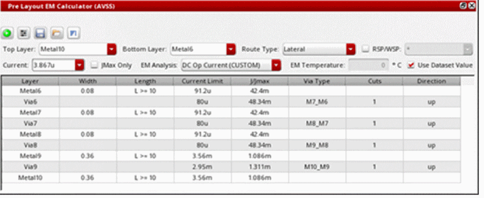
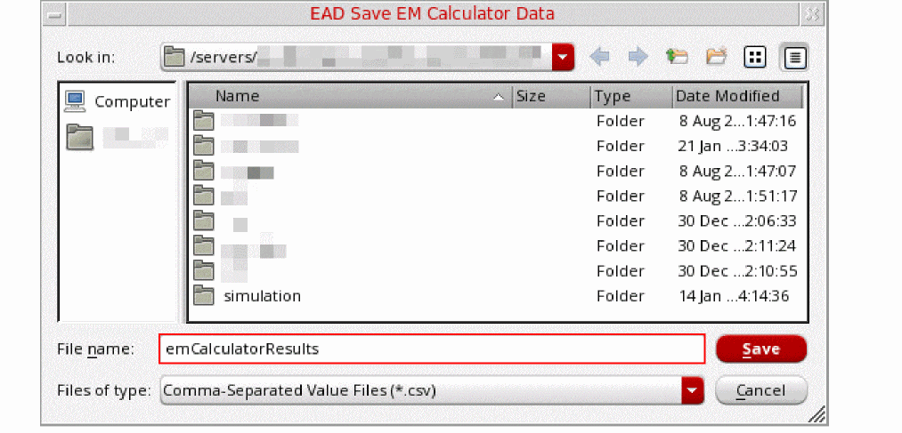
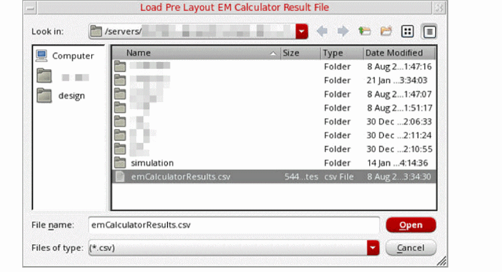
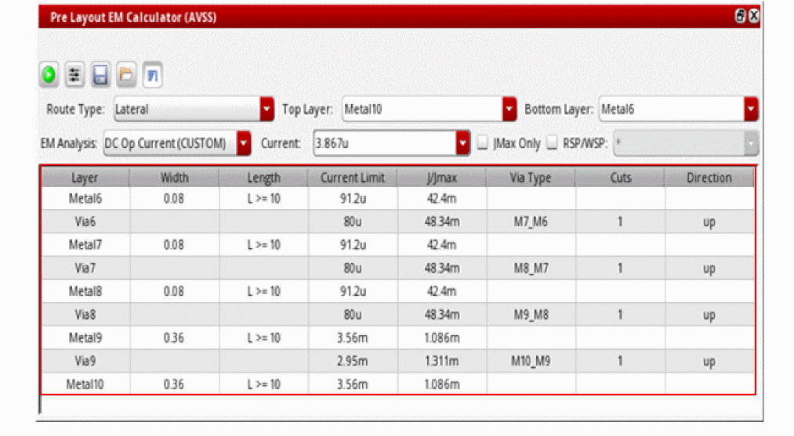

6
Introduction to EM Calculator
The EM Calculator is a tool that provides you recommendations on how you can make your design EM compliant based on certain inputs even before creating the actual circuit layout.
You can use the EM calculator to calculate the EM limits and to get the following recommendations for your design to be EM compliant:
- Width of the interconnect
- Length of the conductor layer
- Number of via cuts
- Number of tracks
- Maximum current
Related Topics
EM Calculator Graphical User Interface (GUI)
Working with the EM Calculator
Opening the EM Calculator
layoutEAD.gui enableEMCalculator environment variable to t before using the EM Calculator.- In the summary pane of the EAD Browser, select a net for which you want to calculate the EM limits.
-
Right-click the selected net and then choose EM Calculator from the context menu.
The Pre Layout EM Calculator (net name) opens.

By default, the EM Calculator opens as a floating window. However, you can choose to open it as a docked widget inside the EAD Browser by setting the environment variable showEMPlannerWindow to nil.
Related Topics
EM Calculator Graphical User Interface (GUI)
Working with the EM Calculator
EM Calculator Graphical User Interface (GUI)
The EM Calculator graphical user interface (GUI) consists of the following elements:
The following figure shows the graphical user interface of EM Calculator.
EM Calculator Toolbar
The EM Calculator toolbar contains the commands that you can use to calculate EM limits, run what-if analysis, and export EM results.
The following table describes the various icons available on the EM Calculator toolbar.
| Icon | Description |
|---|---|
|
Runs EM Calculator to calculate EM limits for the selected net based on the values specified in the User-Specified Fields. See the Calculating EM Limits section for more information. |
|
|
Runs the what-if analysis to see the effects of certain modifications on the EM limits. If you select the JMax Only check box, what-if analysis is disabled. See the Running What-If Analysis section for more information. |
|
|
Exports the EM results in a CSV file See the Exporting EM Results section for more information. |
|
|
Loads existing EM results that you earlier exported for a net. See the Loading EM Results section for more information. |
|
User-Specified Fields
The following table describes the various user-specified fields based on which the EM Calculator calculates the EM limits.
| Field | Description |
|---|---|
|
Select the routing type. Currently, only |
|
|
Select this check box if you want to use widths from a selected WSP group or RSP group. If multiple WSP widths are found for the selected WSP or RSP group, a width for which the number of tracks will be minimum is recommended.
By default, RSP group names are displayed in the drop-down list next to this check box. If you want to use widths from a WSP group, set the environment variable useWSPGroupNames to
If you do not select this check box, width from the |
|
|
Enter the value of current passing through the selected net. This field is disabled if you select the JMax Only check box. |
|
|
Select this check box if you want to view the maximum allowed current. |
|
|
The EM temperature in degrees Celsius. The value displayed in this field is same as that is set in the EM Temperature field on the EM tab of the EAD Options form. If you edit the value in this field, the same value is updated in the in the EM Temperature field on the EM tab of the EAD Options form |
|
|
Select this check box to use the temperature specified in the simulation dataset when computing EM effects. The EM Temperature field becomes unavailable when you select this check box. If the temperature value specified in the dataset is not valid, the default value specified in the EM Temperature field is used. |
Results Table
The results table displays the EM calculations and recommendations of the design changes when you run the EM Calculator and the what-if analysis, respectively.
The following table describes the various columns of the results table.
| Column | Description |
|---|---|
|
Displays all the metal layers between the bottom-most and top-most layers you specified in the Bottom Layer and Top Layer fields, respectively. It also shows the via name connecting each subsequent metal layer.
For example, if you select

|
|
|
This column is available only when the showTracksWithoutWSP environment variable is set to |
|
|
Recommended length which satisfies the length-based EM rules defined in the technology file such that the design is EM-compliant.
If |
|
|
Estimated resistance of the layer. Resistance of a metal layer depends on the Length, Width, and EM Temperature fields, whereas resistance of a via layer depends on the Via Type, Cuts, and EM Temperature fields.
If the values of Length and Width are not valid, the value
This column is available only when the showEstimatedResistance environment variable is set to Calculation of the estimated resistance takes into consideration the color information for metal layers present in the ICT-EM file. The resistance of a metal layer is calculated for all colors, and the worst-case resistance for all color combinations is displayed in the Est. Resistance column. |
|
|
EM limit expressed as the J/Jmax ratio, which is calculated by the following expression:

This column is disabled when JMax Only check box is selected. |
|
|
The recommended values of pulse width. This information is available only for RMS or peak currents. |
|
|
Number of via cuts required to flow the user-specified current through via such that the design is EM-compliant. |
|
Working with the EM Calculator
Using EM Calculator, you can calculate the EM limits for the selected net, run what-if analysis, and export the EM results to a CSV file.
This section describes how to perform these tasks:
Calculating EM Limits
Follow these steps to calculate the EM limits for a net using the EM Calculator:
- From the summary pane of the EAD Browser, select a net for which you want to calculate the EM limits.
-
Right-click the selected net and then choose EM Calculator from the context menu.
The Pre Layout EM Calculator (Net Name) form opens. -
From the Route Type drop-down list, select
Lateral. - From the Top Layer and Bottom Layer drop-down lists, select the bottom and top metal layers.
-
From the EM Analysis drop-down list, select an electrical dataset that you want to use to calculate EM limits.
- If you do not want to use the current from the dataset, specify the value of current manually in the Current field.
-
Select the RSP/WSP check box if you want to use minimum width from the selected RSP or WSP group. You can then select the corresponding RSP or WSP group from the drop-down list displayed next to the RSP/WSP check box.
- Edit the EM Temperature field if you want to specify a different temperature than what is set in the EM tab of the EAD Options form.
- Select the Use Dataset Value check box if you want to use the temperature specified in the simulation dataset when computing EM effects.
-
From the EM Calculator toolbar, click Run EM Calculator to calculate the EM limits.
The EM results are displayed in the results table, as shown in the following figure.

Running What-If Analysis
After analyzing the EM results, you can modify the following values in the results table:
- Tracks: Enter manually to modify.
- Width: Enter manually or select a value from the drop-down list.
- Length: Select a value from the drop-down list.
-
Via Type: Choose the
cutClassname for the selected via from the drop-down list. -
Direction: Choose either
upordownfrom the drop-down list. Additionally, you can right-click the cell and select one of the following options to quickly change the direction of current flow for all or the selected vias:-
Change current direction for this via: Changes the direction of the current flow from
uptodownordowntoupfor the selected via. - Change current direction for all vias: Changes the current direction for all the vias.
-
Use up direction for all vias: Changes the direction of the current flow to
upfor all the vias. -
Use down direction for all vias: Changes the direction of the current flow to
downfor all the vias.
-
Change current direction for this via: Changes the direction of the current flow from
You can then run the what-if analysis by clicking from the EM Calculator toolbar to see their effects on the EM limits and get the recommended values of Tracks, Current Limit, J/Jmax, and Cuts updated in the respective columns.
Exporting EM Results
After running the EM calculator or the what-if analysis for a net, you can export the EM results to a CSV file.
To export EM results for a net to a CSV file:
-
From the toolbar of the EM Calculator, click Export the results (
).
The EAD Save EM Calculator Data form opens.
 - In the File name filed, enter the name of the CSV file to which you want to export the EM results for the net.
- Click Save.
You can later reuse this file to load these results for the net.
Loading EM Results
You can load existing results that you earlier exported for a net.
- From the summary pane of the EAD Browser, select a net for which you want to load the EM results.
-
Right-click the selected net, and then choose EM Calculator.
The Pre Layout EM Calculator (Net Name) form opens. -
From the toolbar of the EM Calculator, click Load existing results (
).
The Load Pre Layout EM Calculator Result File form opens.
 - Select the CSV file containing the EM results that you earlier exported for the same net.
-
Click Open.
The results are displayed in the results table of the EM Calculator.

Return to top